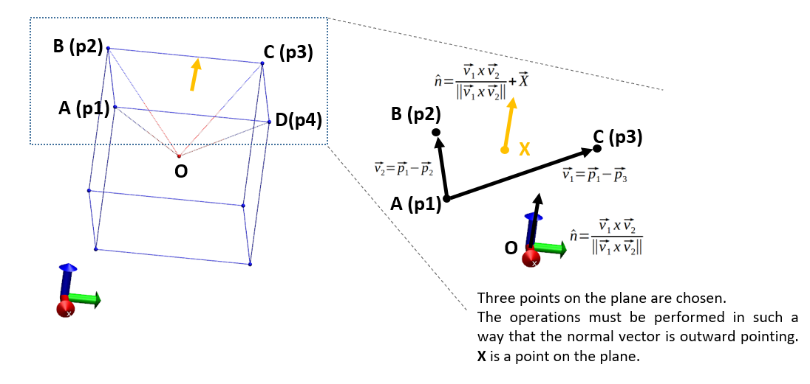
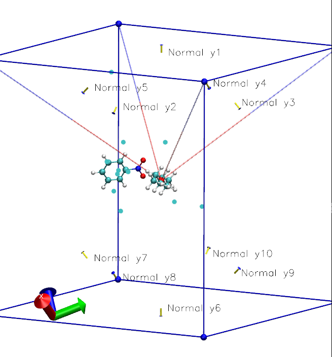
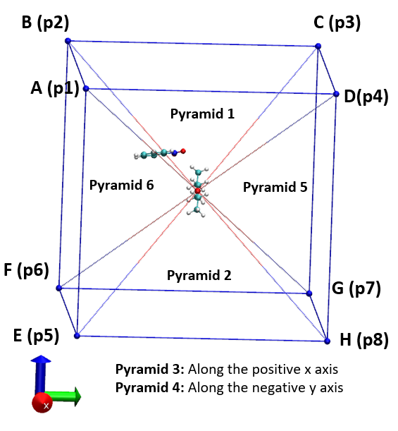
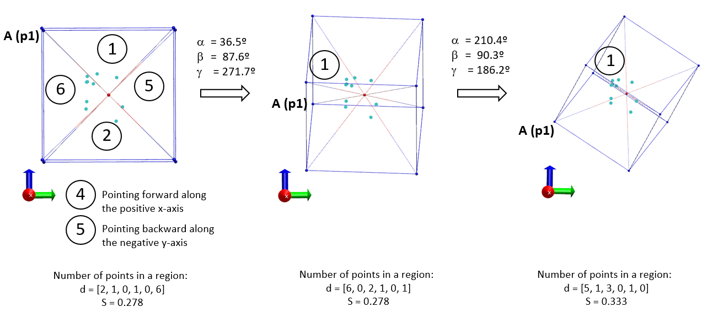
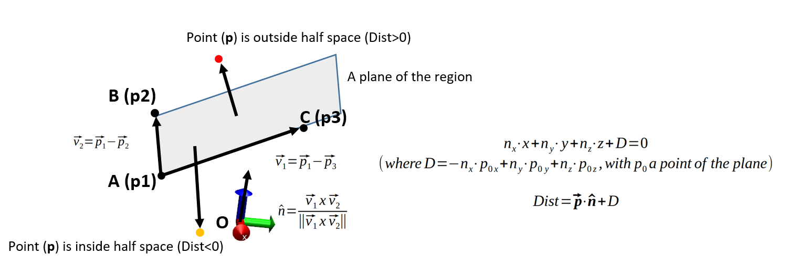

Points Inside Pyramid¶
Overview¶
Example¶
API¶
-
chiripa.points_inside_pyramid.calculateNormal(p1, p2, p3)[source]¶ Calculate the normal vector of a plane from three points in it.
From three vertices, a triangle plane is constructed. The vertice p1 must be the begin point of the two edges vectors.
- Parameters
p1 (ndarray) – 1D array containing the Point 1. Common point of the two edges vectors.
p2 (ndarray) – 1D array containing the Point 2
p3 (ndarray) – 1D array containing the Point 3
- Returns
A 1D array containing the normal vector at the origin (0,0,0)
-
chiripa.points_inside_pyramid.calculate_all_normals_cube(Lx, vertices=None)[source]¶ This only works with cubic boxes, with the origin in [0, 0, 0]. The coordinate reference is placed as:
Reference system:
- Parameters
- Returns
A tuple containing the normals and the dots (D) coeficients of the planes.
normals (ndarray): Shape [6,5,3]. Each row contains all normal vectors (5) of each of the pyramids to divide in 6 regions the cube.
dots (ndarray): Shape [6,5]. Each file contains the value D of each plane equation (nx*x+ny*y+nz*z+D=0)
-
chiripa.points_inside_pyramid.testPointInsidePyramid(boxl, list_of_points, nrotations=100, debug=False, iseed=None)[source]¶ This function divides a cubic region in 6 subregions defined by the six squared-pyramids centered in the cube origin. The origin of the cube must be [0.0, 0.0, 0.0]. Then, it calculates the index of anisotropy (S)
nrotationstimes with different divisions of the space. Subsequenly, both the averaged and the standard deviation are returned. The way to calculate the index of anisotropy (S) is closed to the method proposed by Okuwaki et al.The algorithm is:
Repeat the calculations for
nrotationsof the cube.a. In the first iteration (irot=0), the cube is aligned with the axis. Get the p1-p8 vertices (8 vertices) of the cube.
b. The rest of iterations (irot != 0) the cube is generated by random rotation of the vertices using a tuple of euler angles (
chiripa.internal_coordinates.generate_random_euler_angles()andchiripa.internal_coordinates.euler_rotation_matrix()functions). Get the p1-p8 vertices (8 vertices) of the cube.c. Calculate all outward normal vectors and D coeffients of the five (4 triangles and 1 square) faces in each pyramid. Use the
calculate_all_normals_cube()function.d. For a point p(px, py, pz) and a plane(nx, ny, nz, D), the sign of the Dist value is able to determinate which half space the point is in.
If all signs of the np.dot(p,n_i)+D are negative then the point is inside the region.
- Parameters
boxl (float) – Cubic length in angstroms.
list_of_points (list of ndarray(3)) – All points to be evaluated in the regions. Usually, these points are the center of geometry of the generated confirmations.
nrotations (int) – Number of rotations to be performed to calculate the value of asymmetry parameter. Default=100
debug (bool) – If True write debug information in a directory called ROTATIONS. Default=False
iseed (int) – Seed for the random number generator. If is
Nonethen the iseed is randomly generated. Default=None
- Returns
tuple – The mean and the standard deviation for the index of anisotropy (S)
Warning
This function only works with cubic boxes of length boxl centered in [0., 0., 0.].